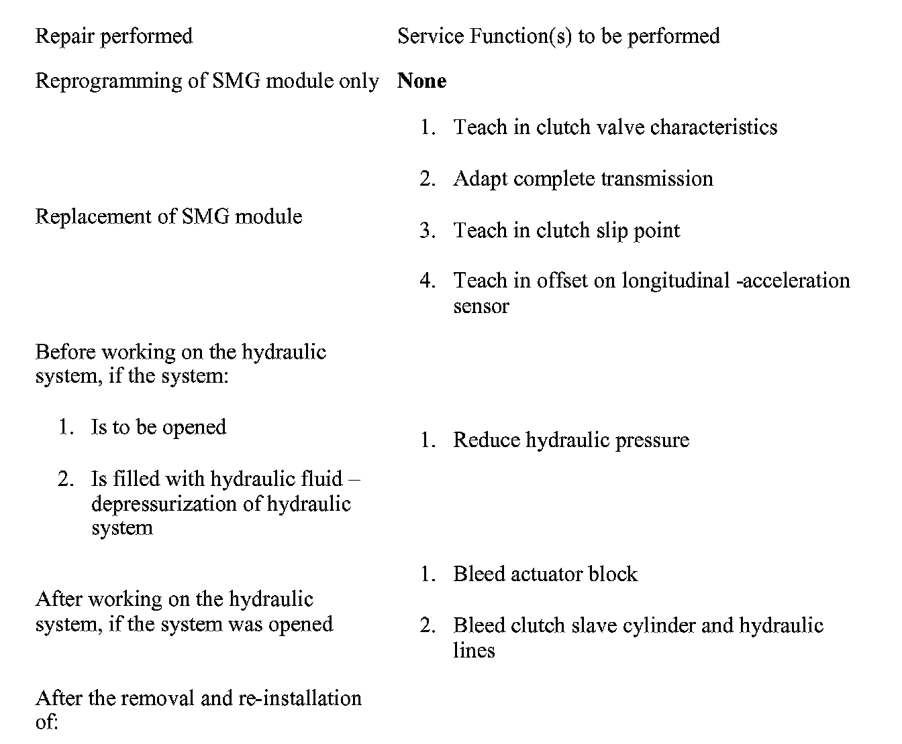
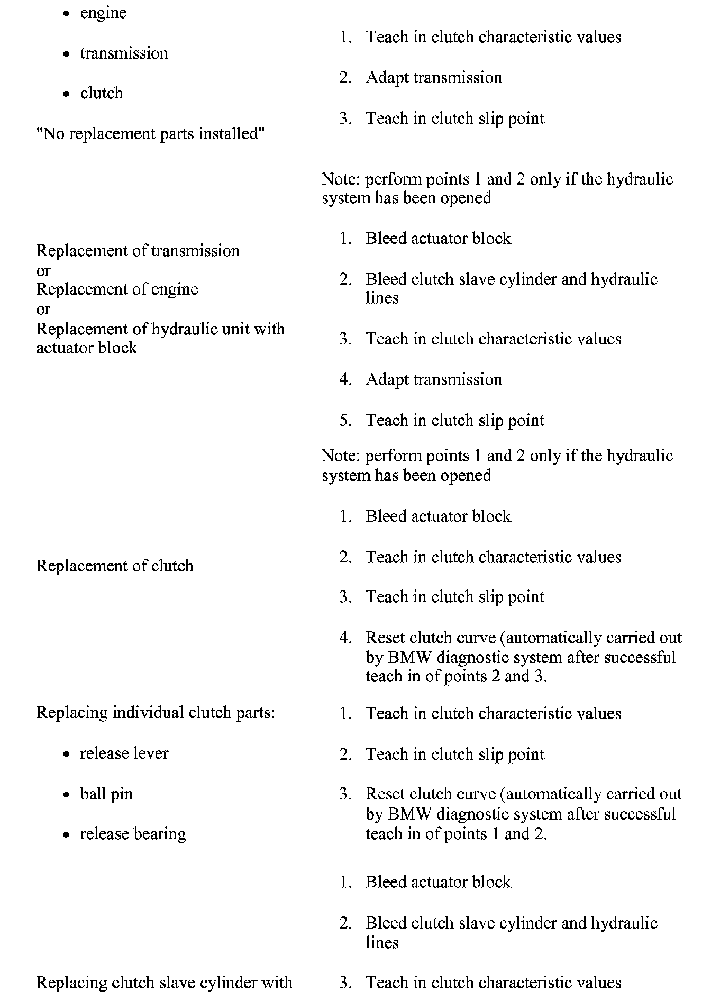
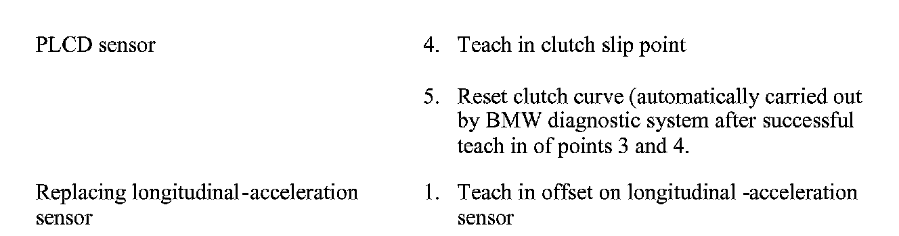

SMG Transmission - Service Functions During Repairs
SI B 23 08 06Manual Transmission
January 2007
Technical Service
SUBJECT
SMG - Service Functions Performed after Drivetrain Repairs
MODEL
All with SMG transmission
SITUATION
Whenever certain drivetrain related repairs are made to vehicles with a SMG transmission, there are various Service Function / test plans which must be carried out for proper operation. These Service Functions only need to be performed after a particular repair, or if directed in a diagnosis test plan based on a stored fault code.



Always refer to the TIS repair instructions, diagnostic test plans, or the SMG service function notes in TIS - summarized above, as to which Service Function(s) must be carried out.
Note:
The service functions must be carried out in the relevant order!
WARRANTY INFORMATION
Information only

Disclaimer